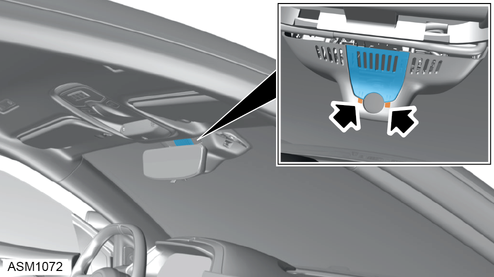
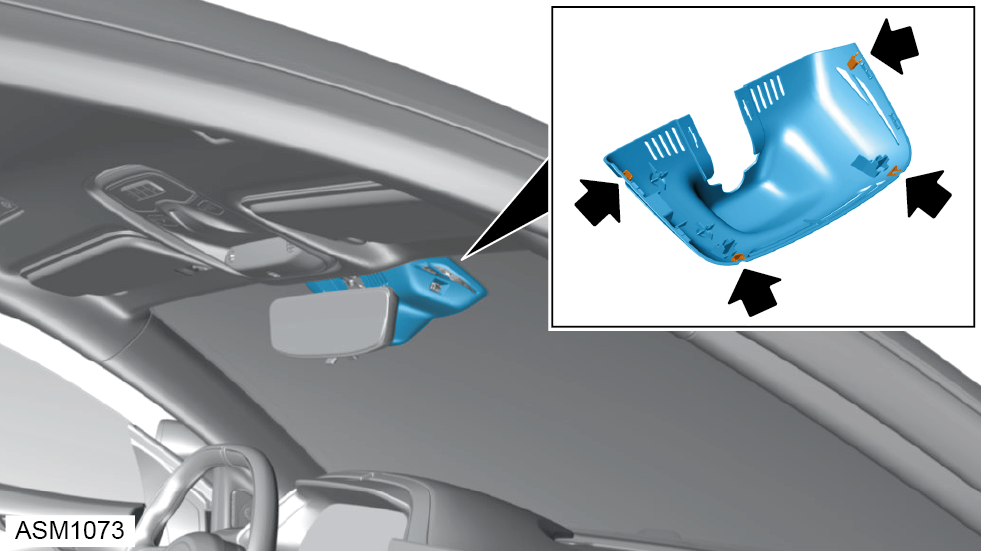
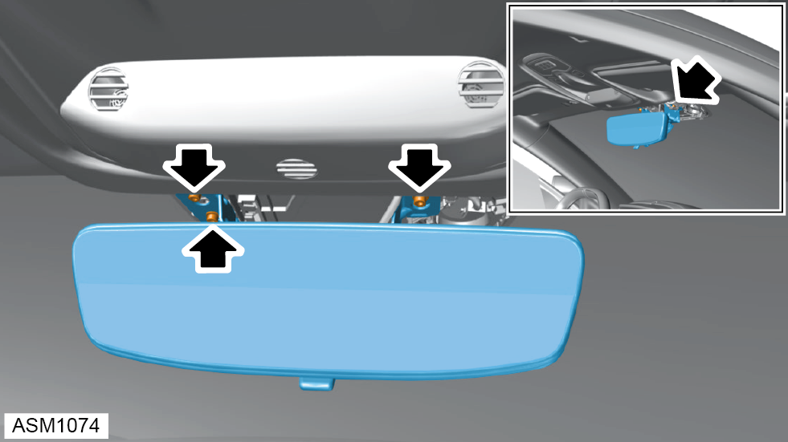
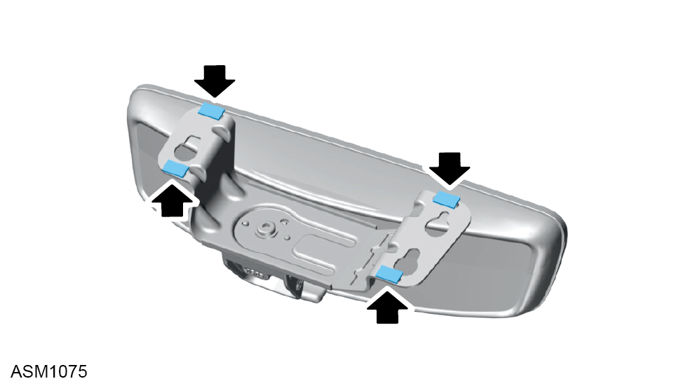
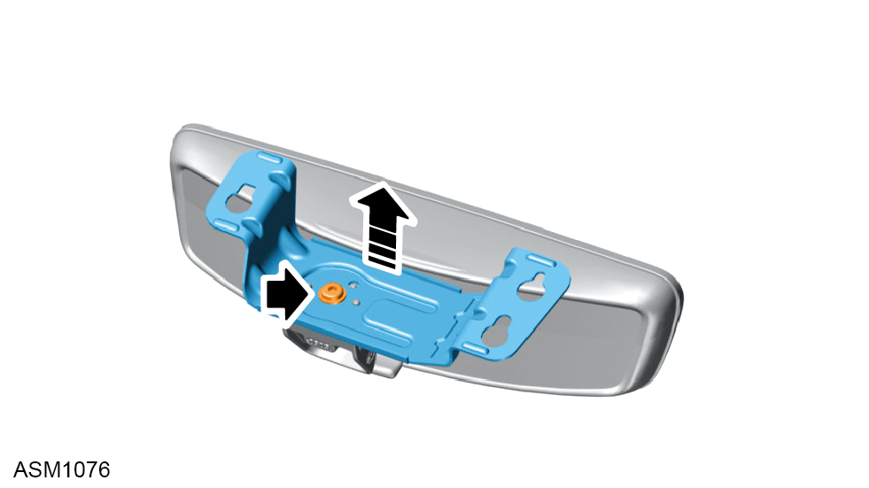
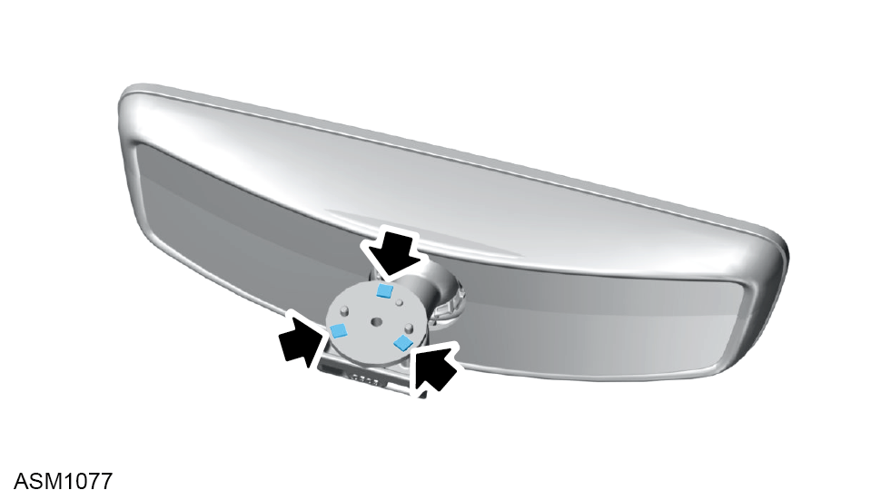

Mirror - Interior Rear View
Print
Operation Code: 15.05.01-02
Removal

- Disengage clips (x2) securing rear mirror cover to mirror cover trim.
- Remove rear mirror cover.

- Disengage clips (x4) securing rear mirror cover trim to windscreen.
- Remove rear mirror cover trim.

- Remove M4x10 bolts (x3) and washers (x3) securing rear view mirror to windscreen.
NOTE: Always record quantity and fitted position of washers.
- Remove rear view mirror.
Do not carry out further disassembly if removing for access only.

- Remove and discard foam pads (x4) from rear view mirror mounting bracket.

- Remove bolt securing rear view mirror bracket to rear view mirror.
- Remove rear view mirror mounting bracket.

- Remove and discard foam pads (x3) from rear view mirror.
Installation
- Installation is the reverse of removal procedure except for the following:
- Renew discarded foam pads.